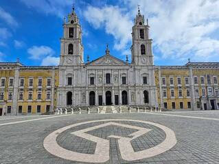
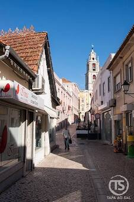
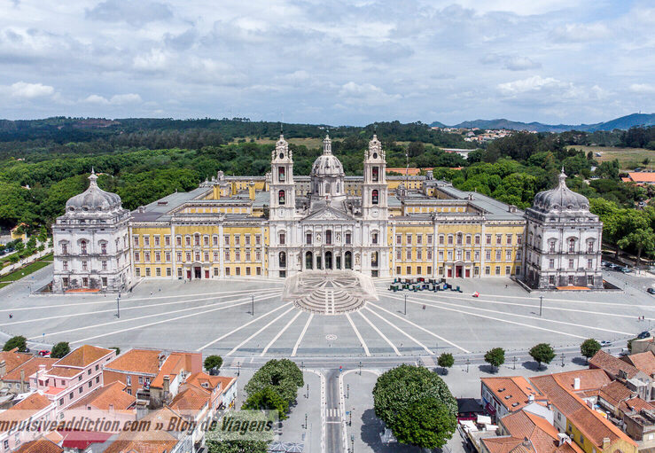
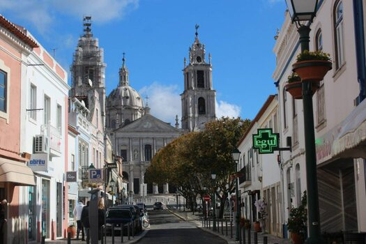
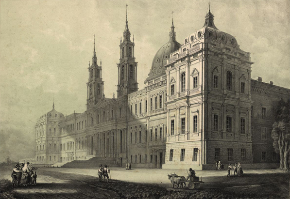
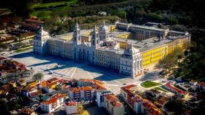
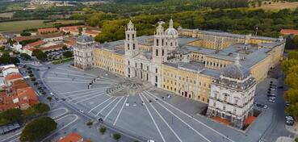
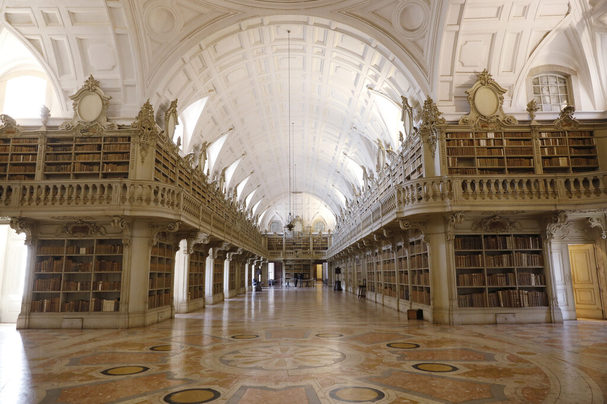

Multimédia
Nesta página apresento diferentes elementos multimédia relacionados com a cidade de Mafra.
Fotografias | Vídeo | Poesia
Fotografias








Vídeo
Flautista - Casa da Amália - Mafra
Atuação de um flautista junto à Casa da Amália, em Mafra.
Convento Nacional de Mafra
O Convento Nacional de Mafra é um dos mais importantes monumentos do barroco português, de matriz italiana. Foi projectado por Johann Ludwig, formado em arquitectura em Itália, e construído entre 1717 e 1730.
Para a Real Basílica de Mafra, D. João V encomendou uma das mais significativas colecções de escultura barroca existente fora de Itália, num total de 58 estátuas.
O romance Memorial do Convento, de José Saramago, retrata também o percurso das estátuas desde o Tejo até Mafra, transportadas inicialmente por barco e depois em carros de bois, por terrenos difíceis.
Poesia
Mafra, cidade de história e tradição,
Onde o palácio domina a paisagem,
Entre pedra, cultura e emoção,
Guarda memórias de uma antiga viagem.
O Atlântico acompanha o horizonte,
E a natureza envolve cada lugar,
Mafra permanece sempre no coração,
Uma cidade que vale a pena visitar.